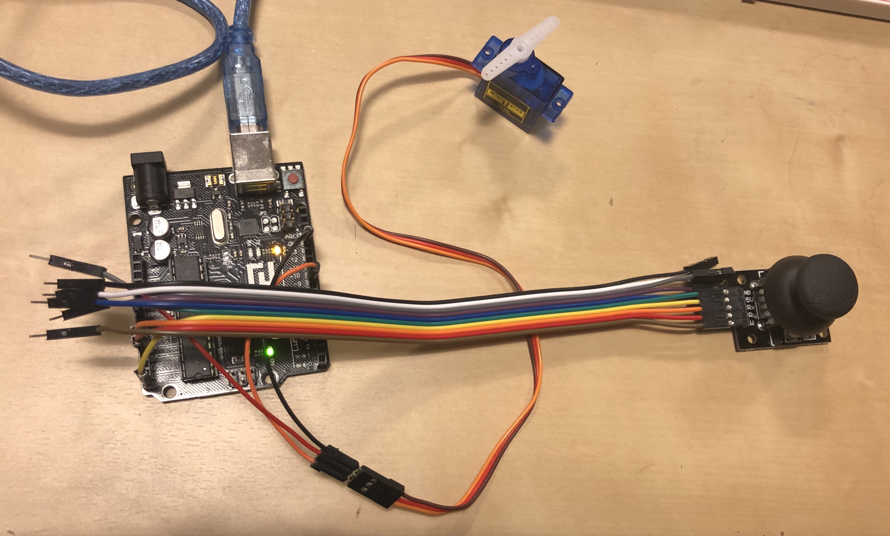
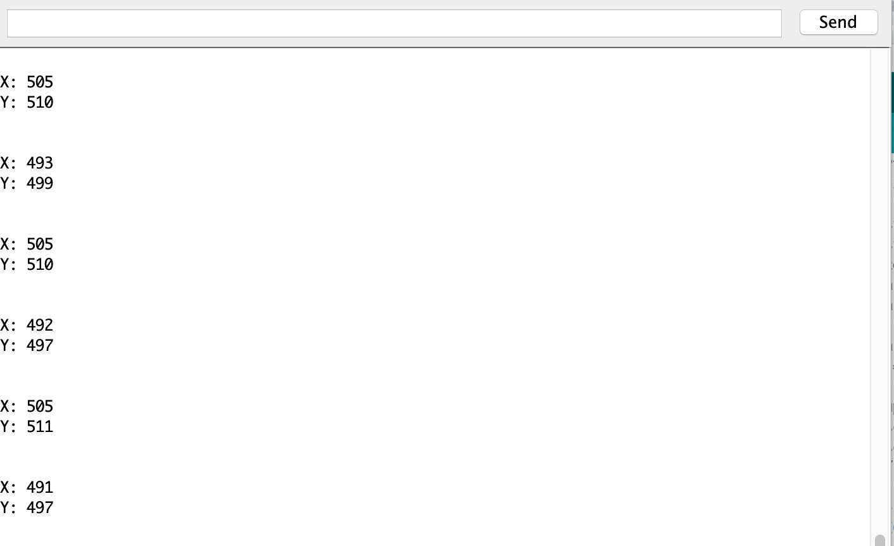
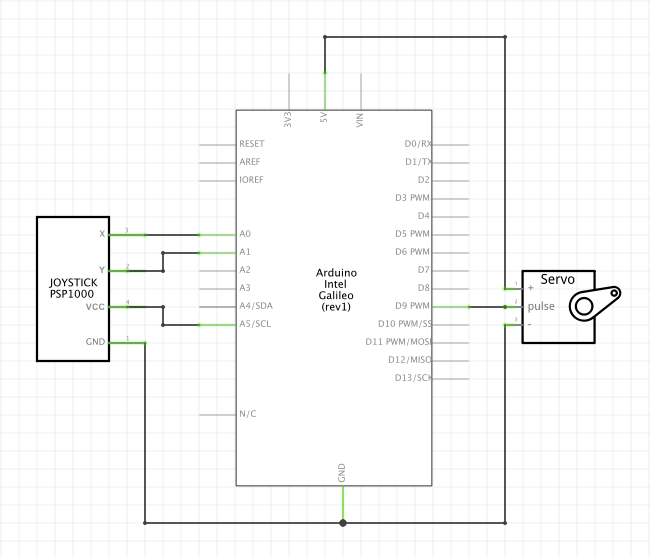

Yuki Asakura's Assignment 5!

Circuit Operation. The servo motor moves with the movement of the joystick.

Circuit board
#include // importing the Servo library
Servo myServo; // create a Servo object
int xPosition = 0; // x position of joystick
int yPosition = 0; // y position of joystick
int outputValue = 0; // motor position derived from the joystick position
const int xPin = A0; // pin connected to x position of joystick
const int yPin = A1; // pin connected to y position of joystick
const int VOUT = A5; // pin connected to voltage input of joystick
const int initial_position = 90; // initial position of servo motor
void setup() { // setting up the arduino
pinMode(xPin,INPUT); // setting xPin as an input
pinMode(yPin,INPUT); // setting yPin as an input
pinMode(VOUT, OUTPUT); // setting VOUT as an output
digitalWrite(VOUT, HIGH) ; // setting VOUT to output +5V
myServo.attach(9); // attaches the servo on pin 9 to the servo object
myServo.write (initial_position); // set the initial position of the servo motor
Serial.begin(9600); // initialize serial communications at 9600 bps
}
void loop() { // this function will keep looping
xPosition = analogRead(xPin); // read the x position of the joystick
yPosition = analogRead(yPin); // read the y position of the joystick
outputValue = (xPosition + 520)/10; // map the x position of the joystick to servo motor position
myServo.write(outputValue); // move the servo motor
Serial.println("output value: " + outputValue); // write the output value to the serial monitor
Serial.print("X: "); // write "X:" to the serial monitor
Serial.println(xPosition); // write the X position of the joystick to the serial monitor
Serial.print("Y: "); // write "Y:" to the serial monitor
Serial.println(yPosition); // write the Y position of the joystick to the serial monitor
Serial.println(""); // insert a new line in the serial monitor
delay(100); // add delay between reads
}
Code Snippet

Serial Monitor

Schematic + Calculation
Equation
outputValue = (xPosition + 520)/10;
Lower limit
outputValue = (0 + 520)/10
outputValue = (520)/10
outputValue = 52 degrees
Upper limit
outputValue = (1023 + 520)/10
outputValue = 1543/10
outputValue = 154.3 degrees
To map the joystick's X position to the servo motor, I used a simple equation above. While it wasn't a perfect 1:1 mapping, it gave a lower limit of 52 degrees and an upper limit of 154.3 degrees for the servo motor. As a result, the servo motor corresponded to the motion of the joystick.